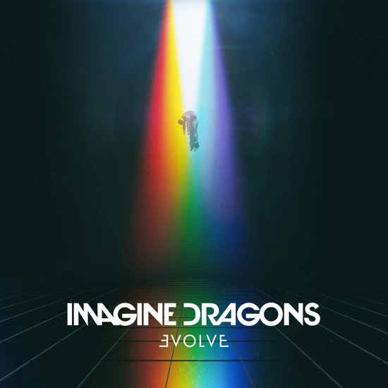
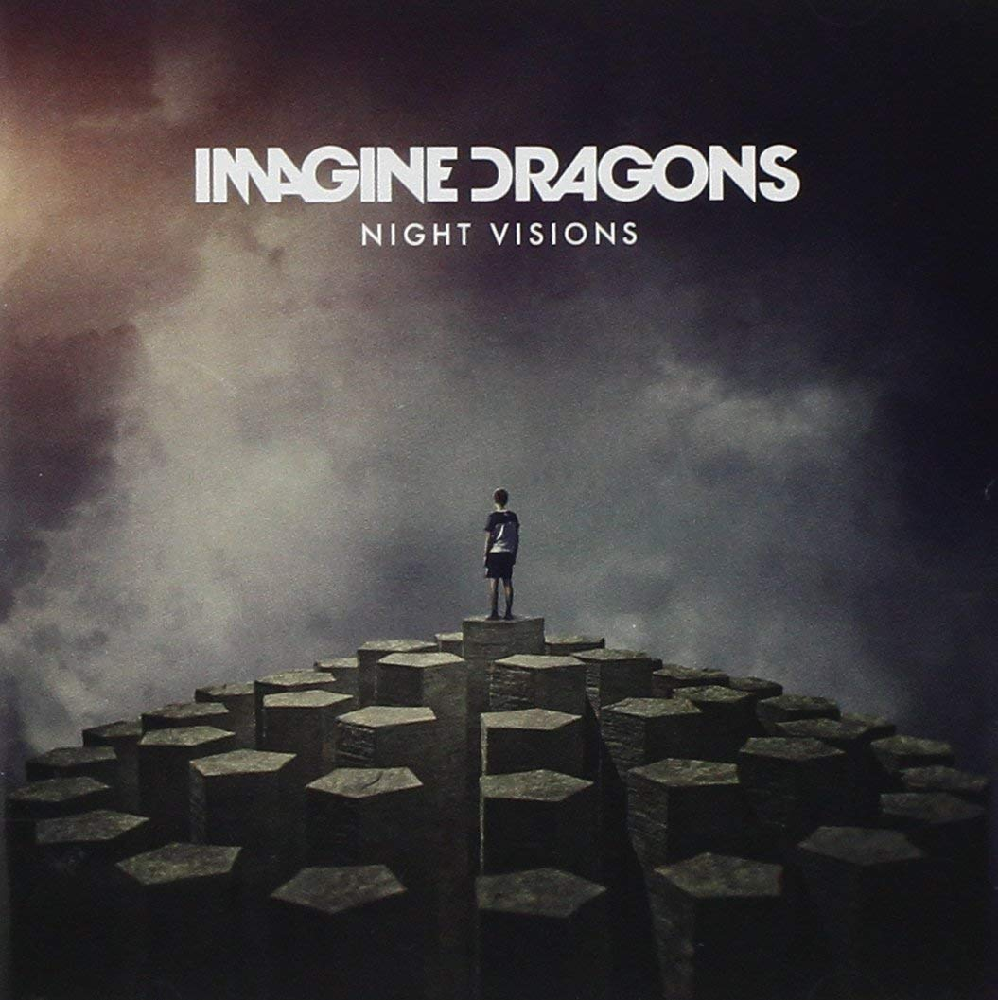
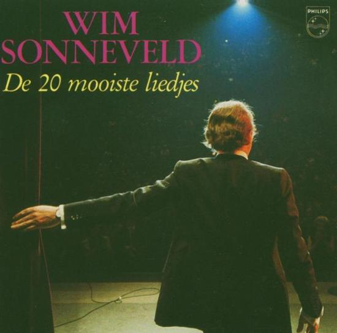
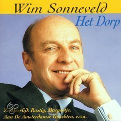

Cd covers met animatie
Login
Registreer
Orgins
Imagine Dragons
- Natural 3:09
- Boomerang 3:08
- Machine 3:02
- Cool Out 3:38
- Bad Liar 4:21
- West Coast 3:37
- Zero 3:31
- Bullet In A Gun 3:25
- digital 3:21
- Only 3:01
- Stuck 3:11
- Love 2:46
- Birds 3:39
- Burn Out 4:34
- Real Life 4:08

Evolve
Imagine Dragons
- Next To Me 3:50
- I Don't Know Why 3:10
- Whatever It Takes 3:21
- Believer 3:24
- Walking The Wire 3:53
- Rise Up 3:52
- I'll Make It Up To You 4:23
- Yesterday 3:25
- Mounth Of The River 3:42
- Thunder 3:07
- Start Over 3:06
- Dancing In The Dark 3:54

Night Visions
Imagine Dragons
- Radioactive 3:07
- Tiptoe 3:14
- It's Time 4:00
- Demons 2:57
- On The Top Of The World 3:11
- Amsterdam 4:01
- Hear Me 3:55
- Every Night 3:37
- Bleeding Out 3:43
- Underdog 3:43
- Nothing Left To Say/Rocks 8:57
- Working Man 3:55
- Fallen 2:59
Smoke and Mirrors
Imagine Dragons
- Shots 3:52
- Gold 3:37
- Smoke And Mirrors 4:21
- I'm So Sorry 3:50
- I Bet My Life 3:13
- Polaroid 3:50
- Friction 3:22
- It Comes Back To You 3:38
- Dream 4:18
- Trouble 3:12
- Summer 3:38
- Hopeless Opus 3:59
- The Fall 6:03

De 20 mooiste liedjes
Wim Sonneveld
- Aan de Amsterdamse grachten 2:37
- Nacht in Krimpen aan de IJssel 2:18
- Het Dorp 3:16
- Margootje 4:49
- Luchtkastelenn 2:52
- Verliefd op juffrouw van Dam 3:24
- Wat moet ik doen zonder jou 2:52
- Die mooie blauwe ogen 4:13
- Een cent 3:08
- Burgemeester Beckmanlaan 4:00
- Marjolijne 3:01
- Scheveningse tram 4:38
- Huis-tuin-en keukenliedje 3:46
- Carolientje 2:27
- Huwelijkreis 2:48
- Zo heerlijk rustig 2:43
- Annemarie 2:30
- Zo vaak Amsterdam gedacht 3:07
- Het hondje van Dirkie 4:36
- Weet je nog wel oudje 2:50

Het dorp
Wim Sonneveld
- Het Dorp 3:16
- Kobie 2:50
- Catootje 6:20
- Zo heerlijk rustig 2:43
- Een Cent 2:26
- Marjolijne 3:02
- Daar is de orgelman 3:31
- Margootje 4:50
- Aan de Amsterdamse grachten 2:37
- Gerrit 3:00
- Verliefd op juffrouw van Dam 3:25
- Nacht in Krimpen aan de IJssel 2:19
- Loflied op Dora 3:14
- Die mooie blauwe ogen 4:13
- Liedje met bloemen 3:56
- Josefien 3:33